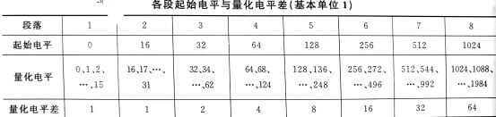
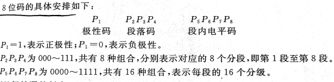
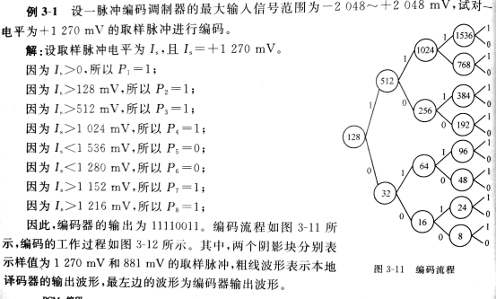
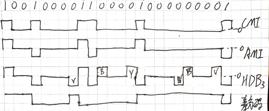
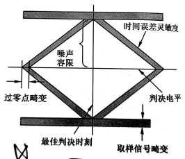
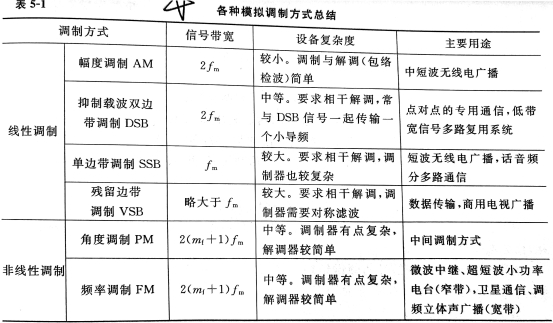

1 P2 电信号分类
模拟信号、数字信号
2 P4 基本的通信系统组成
干扰↓
信源→发送设备→信道→接收设备→信宿
3 P5 通信系统分类
按传输媒质分类、按信道中所传信号的特征分类、
按工作频段分类、按是否调制分类、按业务不同的分类、
按通信者是否运动分类
4 P6 通信网络拓扑结构的类型及各自优缺点
总线结构
优点：
连接形式简单，易于实现，所用线缆最短，增加或者移除结点比较灵活，个别结点发生故障时，不影响网络中其他结点的正常工作。
缺点：
网络传输能力低，安全性低，总线发生故障时，会导致全网瘫痪。结点数量的增多会影响网络性能。
环形结构
优点：
一次通信的最大传输延迟是固定的，每个网上结点只与其他二个结点有物理链路直接互连。传输控制机制简单，实时性强。
缺点：
一个结点发生故障时，可能导致全网瘫痪，可靠性差。
星型结构
优点：
结构简单，建网容易，控制简单。
缺点：
属于集中控制。主机负载过重，可靠性低，通信线路利用率低。
5 P9 通信方式分类
方式：单工通信、半双工通信、全双工通信。
实现全双工方式：频分双工、时分双工、回拨抑制。
6 P14 数字通信系统的有效性与传输速率关系
对于模拟通信来说，系统的有数性和可靠性具体可分别用有效传输频带带宽和输出信噪比(或均方误差)来衡量。
对于数字通信而言，系统的有效性和可靠性具体可分别用传输速率和误码率来衡量。
7 P22 恒参信道和随参信道的概念
恒参信道：信道的传输特性基本上是不随时间变化的。
随参信道：其传输特性随时间做较快的变化。
8 P30 反射、折射、衍射的概念
反射是入射光波照射在物体表面上后与入射相位发生180°的变化后反射出去。
折射是电磁波传播时与光的传播类似的另一种现象
衍射是波在直线传播时绕过障碍物的一种现象
9 P33 表2-3,衰减的概念
衰减是由于信号在信道内传播过程中，因能量损耗而导致了幅度减小
10 P43 信息码;语音编码技术的分类
信息码分为ASCII码
语音编码分为波形编码、参量编码、混合编码
11 P44 模拟信号数字编码的三个步骤
取样、量化、编码
12 P47 表3-1

13 P49 8位码的分配

14 P50 例3-1

15 P57 JPEG和MPEG
JPEG是联合图像专家组的英文缩写，其算法称为JPEG算法，并且成为国际上通用的标准，因此又称为JPEG标准。JPEG是一个适用范围很广的静态图像数据压缩标准，既可用于灰度图像又可用于彩色图像。
MPEGISO和IEC于1988年成立“运动图像专家组(MPEG)”,研究制定了视频及其伴音国际编码标准。MPEG阐明了声音电视编码和解码过程，严格规定了声音和图像数据编码后组成位数据流的句法，提供了解码器的测试方法等。
16 P60 差错控制码的功能分类
(1)检错码:只能发现错误,不能纠正错误。
(2)纠错码:能够发现错误并能纠正错误。
(3)纠删码:能够发现错误并能纠正或删除错误
17 P63 正反码的码组
正反码是一种简单的能够纠正错误的编码
若信息码为11001，码祖为1100111001
信息码为10001，码祖为1000101110
18 P76 数字基带信号的常用码型绘制

19 P78 熟记设计数字基带信号码型时应考虑的原则
（1）对于传输频带低端受限的信道.般来讲,线路传输码型的频谱中应不含直流分量
(2)码型变换(或叫码型编译码)过程应对任何信源具有透明性，即与信源的统计料性无关。所谓信源的统计特性，是指信源产生各种数字信息的概率分布。
(3)便于从基带信号中提取位定时信息，在基带传输系统中，位定时信息是接收瑞再生原始信息所必需的。在某些应用中位定时信息可以用单独的信道与基带信号同时传输，但在远距离传输系统中这常常是不经济的。因而需要从基带信号中提取位定时信息，这就要求基带信号或经简单的非线性变换后能产生出位定时线谱。
(4)便于实时监测传输系统信号传输质量，即应能检测出基带信号码流中错误的信号状态。这就要求基带传输信号具有内在的检错能力，对于基带传输系统的维护与使用，这一能力是有实际意义的。
(5)对于某些基带传输码型，信道中产生的单个误码会扰乱一段译码过程，从而导致译码输出信息中出现多个错误，这种现象称为误码扩散(或误码增殖)。显然，我们希望误码增殖越少越好。
(6)当采用分组形式的传输码型(如5B6B码等)时，在接收端不但要从基带信号中提取位定时信息，而且要恢复出分组同步信息，以便将收到的信号正确地划分成固定长度的码组。
(7)尽量减少基带信号频谱中的高频分量，这样可以节省传输频带，提高信道的频滑利用率，还可以减小串扰。
(8)编译码设备应尽量简单。
20 P79 AMI码和HDB3码的波形绘制
P18道
21 P85 相位抖动的概念
PCM信号的码流经过信道传输后，各中继器终端站提取的时钟脉冲在时间上不是
等间隔的，即时钟脉冲在相位上出现了偏差，这种现象称为相位抖动。
22 P86 眼图的模型

23 P111 数字通信系统的分类

24 P114 FSK与ASK关系
一个FSK信号可以近似地看成两个经不同频率载波调制的ASK信号相叠加。
25 P116 二进制移相键控的定义
二进制移相键控（2PSK）是以载波的不同相位直接去表示相应数字信息（0或1）的相位键控方法，也被称为绝对移相方式。
26 P119 2FSK、2DPSK的应用场景
2DPSK应用于高速运输
2FSK应用于中、低速数据传输
27 P172 CDMA的特点
（1）系统容量大
（2）系统容量的灵活配置
（3）系统性能质量更佳
（4）频率规划简单
（5）延长手机电池寿命
（6）建网成本降低
28 P181 4G通信的关键技术
（1）正交频分复用（OFDM）
（2）智能天线技术
（3）软件无线电（SDR）技术
（4）多用户检测技术
（5）IPv6技术
30 P138 ASK/FSK/PSK/DPSK的波形绘制
文章归档